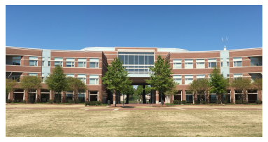

Projects
-
Water Detection & Segmentation - SVM, NN, PCA, Clustering ( Code | Project Report | ) -
Water Detection & Segmentation - Bayes Classifier, Punish and Reward Algorithm ( Code | Project Report | ) -
Scale Invariant Feature Transform for Panaromic Image Stitching ( Code | Project Report | ) -
Circular Extension to Hough Transform ( Code | ) -
Variable Conductance Diffusion for Edge Preserving Smoothing ( Code | Project Report | ) -
Statistical Modelling of Fish Population
( Project Report | ) -
Open Stream Water Velocity Profiler using Image Processing ( Project Report | ) -
Vehicular Database Management System for Accident Avoidance (Project Report | ) -
Camera Aided Topography Measurement System
(Project Report | )
Features used: Mean and Variance of Hue and Saturation
Neural Networks: MATLAB toolbox for ANN is used for training and testing purpose.
Support Vector Machines: Since the data distribution is non-linear,
radial basis function is used to get the separating plane.
Sequential Minimal Optimization is used to solve the optimization
problem.Principal Component Analysis:
KL transform is performed on the data and
projected onto minor eigen vector.Clustering:
K-means Clustering is used.
Result of Multiscale Segmentation using Support Vector Machines
Features used: Mean and Variance of Hue and Saturation
Bayesian Classifier: Probabilities are used in
Multiscale Segmentation.
Perceptron Algorithm: Less accuracy because of non-linear data.
Technical paper on Adaptive Sky Removal is in progress.
Homography Matrix which is used to stitch the two images.
Two Separate Images with some overlapped area

Stitched Image
Lead Hole Detection
Heat Equation: ∂fi/∂x = α(∇^T(c∇f))|i
is used for this purpose where the difference is added to the original image till some
optimized output is acheived.
Edge Preserving Smoothing on an X-ray image of Coronary Arteries
Rayleigh Distributed amplitudes.
The school of fish was found to be Normally Distributed (Gaussian)
verifying the
Central Limit Theorem.
The process was modelled using fish's position, orientation and
motion as random variables.
Star and extended-star network topologies were modelled for small office network using OPNET Riverbed Modeler. Discussed performance issues related to Ethernet delay, Ethernet load and network traffic.
M/M/1 Queue Simulation ModellingModelled an M/M/1 Queueing system in OPNET and analysed the network performance based on packet arrival rates, packet sizes and service capacities.
Mixed 802.11 WLAN Configurations, RTS/CTS and Jammer Performance
Performance issues of WLAN 802.11n, 802.11g and 802.11b based on network load, throughput and traffic drop are discussed. Discussed the hidden node problem. Network performance in presence of Jammer based on jammer location, in terms of drop in traffic and throughput is analyzed.

Time Averaged Graph of Traffic Drop because of Buffer Overflow
Blue Line - Network with all 802.11n nodes, Red Line - Network with 802.11n and 802.11g nodes, Green Line - Network with 802.11n/b/g all nodes

Flow tracking through a colored liquid discharge

Pseudo-colored Image of Sediment Classification - Compressed(Orange), Hindered(Yellow), Flocculent (Pink), Clear Water (Blue)
NIYANTRA 2012, Autonomous Embedded System Design Competition, Finalist
Two Dimensional Localization of the Object